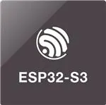

ESP32S3 with Battery Management System (BMS)
This project is a template of an ESP32 board for the
ESP32 S3 Line
boards.
This project provides a template for a standalone board or expansion module utilizing the
ESP32-S3 microcontroller. It features an integrated Battery Management System (BMS)
circuit, allowing for portable operation with Li-Ion or Li-Po batteries. The template
includes basic routing for power, USB, and IO breakout.

(c)2025 Amar Jay